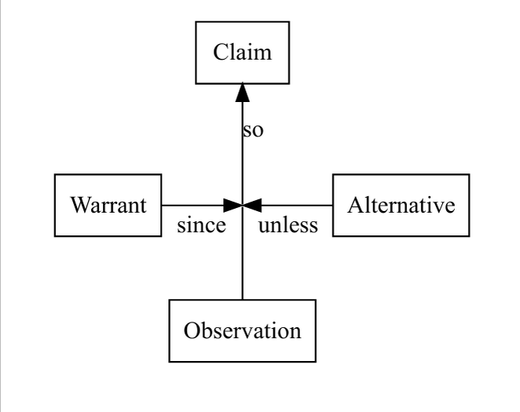
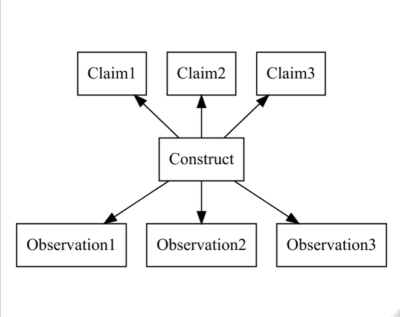
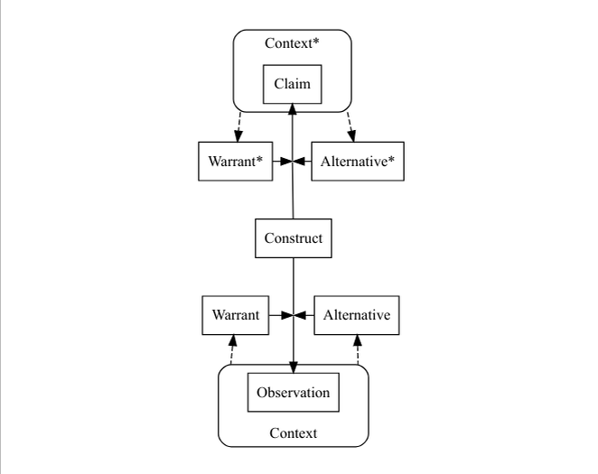

02 Assessment Argument
The Assessment Argument

Subject person (or thing) being measured
We persons doing the measurement
Claim: What we want to say about subject
Observation: Something we see about subject (often in a certain situation or context)
Warrant: Reason to believe observation is associated with claim
Alternative: Reasons why observation could be present when claim does not hold
A task is a way of creating a situation in which we can make an observation.
Example
Claim: The job candidate can produce appropriate and relevant routine business correspondence.
Observation: The candidate’s cover letter was well written.
Warrant: A cover letter is a type of business correspondence, therefore this is a positive example of the type of needed work.
Alternative: The candidate may have had help writing or correcting the letter.
Task and Task Features Features
A task is a sequence of actions a subject performs in pursuit of a goal.
A task, particularly in an assessment, has a number of parts:
- Prompt – Statement of the goals of the task
- Explicit prompt (what is written down or said)
- Implicit prompt (instructions subject is assumed to know)
- Rubric – set of instructions
- Scoring Rubric – information about how task is awarded points
- Resources
- Content
- Tools
- Collaborators
- Internal (subject’s experiences and memory)
- Work Product and Process (WPP)
- Work product is what is produced
- selection
- Document
- Simulator state
- Work process is series of steps taken to reach goal
- Log file
- Audio/video transcript
- Work product is what is produced
Feature and observable variables
A task feature is a variable that describes some aspect of a task prompt or resources.
An observable variable (indicator, observable) is a variable that describes the realized work product or process.
Variable Trichotomy
There are three aspects to a variable definition:
- Domain: possible values variable could take on.
- Value: the value it takes a particular situation
- Evaluator: a rule or procedure for determining its value.
Clarity Test
A variable passes the clarity test if running the evaluator in a particular situation produces an unambiguous result (HowardMatheson1981?).
Latent variables are variables that don’t pass the clarity test. Their value must be inferred from observations.
Situational variables
Task features – task goal and resources
- Response type
- Skill demands
- Kind and length of research material
Environment features – environment properties and affordances
- distractions
- security
- tool availability
Person features – features of the subject, usually related to their experience
biological
preparation
aversions
Interaction features
Person by task: familiarity
Person by environment: ADHD and noisy environment
Task by environment: Calculation demand and calculator availability
Situtations and Contexts
A situation is a collection of variables describing a particular point in time and space.
- In a situation all variable have an assigned value.
A context is a set of situations.
Variables may be unknown, or restricted to a set.
Some contexts are nested within others.
Observables (Indicators) and Claims
Observables or indicators are features of the outcome (work product or process) of a task.
What subject did, wrote, said, indicated, &c
An observation is a realized observable, usually in a particular situation.
A claim is a prediction about a future observation, in a context (set of possible situations).
Constructs
A construct is a latent variable associated with a collection of related claims.
Skill in academic construct
Latent trait or state
Psychological syndrome
Different levels of the construct are associated with different claims.
Russell’s Rule | For different levels of the construct to be identifiable, there must be at | least one different claim associated with each level.
Assessments
An assessment is a series of assigned tasks, whose observation will be used to assign a value to a construct.
Generally, the context in an assessment is constrained.

Contexts and Situtaions with Constructs
Let context be the constrained context of the assessment.
Let _context*_ be the less constrained context of the claim.

Logical Reasoning
Hypothesis: \(H\) – construct is within a certain set of values
- \(\overline{H}\) – negation of hypothesis
\(C_1, C_2, \ldots\) – claims
\(E_1, E_2, \ldots\) – observations.
Deduction
$ H E$
Often add probability, so \(P(E|H) \ge P(E|\overline{H})\)
Weight of Evidence \[ WOE(H\mathord{:}E) = \log { \frac{\Pr (E |H)}{\Pr (E | \overline H )} } = \log { \frac{\Pr (H | E)}{\Pr (\overline H | E)} } - \log { \frac{\Pr (H )}{\Pr (\overline H )} } \]
Radicals and incidentals
Let \(Z\) be a feature variable, and \(z_1\) and \(z_2\) two possible values.
A feature variable is radical if \(P(E|H,Z=z_1) \ne P(E|H,Z=z_2)\) or \(P(E|\overline{H},Z=z_1) \ne P(E|\overline{H},Z=z_2)\)
A feature variable is incidental if it is not radical. It is approximately incidental if the probability of the \(z_2\) value is low.
Abduction
$ H E$
Reversing the arrow can be done with Bayes Rule
\[ P(H|E) = \frac{P(E|H)P(H)}{P(E)} = \frac{P(E|H)P(H)}{P(E|H)P(H) + P(E|\overline{H})P(\overline{H})} \]
Often not enough evidence from single observation to make good prediction.
There is dependence on the base rate \(P(H)\).
Induction
Repeated observation indicates the claim holds.
- Sun rises every morning, so sun will rise tomorrow.
- Every swan I’ve seen is white, so all swans are white:

Sample of situations in assessment must be a representative sample of the target Context* in the claim.
Validity Argument
Use induction and abduction to go from observations to constructs.
Use deduction to go from construct to claims.
Need to be careful about which contexts are covered in the claims.
Sensitivity and Specificity
\(T\) – test result indicates claim holds \(C\) – claim holds.
Sensitivity: \(P(T|C)\)
Specificity: \(P(\overline{T}|\overline{C})\)
False Positives and Negatives
False positives and false negatives have different costs based on the use of the assessment.
Need for sensitivity and specificity depends on use of the assessment.
Can adjust cut score to trade sensitivity and specificity.
Receiver operating characteristic or ROC curve:

More area under curve means better assessment.
Usually requires longer assessment.
Exercise
Make a copy of this Google sheet.
Make your own Toulmin diagram, and share it with some colleagues.